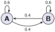

Skip to main content
Contents Embed Dark Mode Prev Up Next \(\newcommand{\foo}{b^{ar}}
\newcommand{\aug}{\fboxsep=-\fboxrule\!\!\!\fbox{\strut}\!\!\!}
\newcommand{\Nul}{\operatorname{Nul}}
\newcommand{\Col}{\operatorname{Col}}
\newcommand{\Span}{\operatorname{Span}}
\renewcommand{\det}{\operatorname{det}}
\newcommand{\rank}{\operatorname{rank}}
\newcommand{\lt}{<}
\newcommand{\gt}{>}
\newcommand{\amp}{&}
\definecolor{fillinmathshade}{gray}{0.9}
\newcommand{\fillinmath}[1]{\mathchoice{\colorbox{fillinmathshade}{$\displaystyle \phantom{\,#1\,}$}}{\colorbox{fillinmathshade}{$\textstyle \phantom{\,#1\,}$}}{\colorbox{fillinmathshade}{$\scriptstyle \phantom{\,#1\,}$}}{\colorbox{fillinmathshade}{$\scriptscriptstyle\phantom{\,#1\,}$}}}
\)
Section 5.2 The Characteristic Equation
Handout 5.2 The Characteristic Equation
Objectives: Topics
Objectives: Goals
Construct the characteristic polynomial of a matrix and use it to identify eigenvalues and their multiplicities.
Characterize the long-term behaviour of dynamical systems using eigenvalue decompositions.
\(\lambda\) is an eigenvalue of
\(A\) if and only if
\((A-\lambda I)\) is not
invertible .
Therefore, to calculate the eigenvalues of
\(A\text{,}\) we can need to find all
\(\lambda\) so that
\begin{equation*}
\det(A-\lambda I)=0.
\end{equation*}
Definition 5.13 .
The quantity
\(\det(A-\lambda I)\) is the
characteristic polynomial of
\(A\text{.}\)
The equation
\(\det(A - \lambda I) = 0\) is the
characterisitc equation of
\(A\text{.}\)
The roots of the characteristic polynomial are the
eigenvalues of
\(A\text{.}\)
Example 5.14 .
Find the characteristic polynomial of
\begin{equation*}
A=\begin{bmatrix}
5 \amp 2\\
2 \amp 1
\end{bmatrix}.
\end{equation*}
Then determine the eigenvalues of
\(A\text{.}\)
Example 5.15 .
\begin{equation*}
M=\begin{bmatrix}
a \amp b\\
c \amp d
\end{bmatrix}.
\end{equation*}
Express the characteristic equation of
\(M\) in terms of
\(\det(M)\text{.}\) What is the equation when
\(M\) is singular?
Definition 5.16 . Algebraic Multiplicity.
The
algebraic multiplicity of an eigenvalue is its multiplicity as a root of the characteristic polynomial.
Example 5.17 .
Compute the algebraic multiplicities of the eigenvalues for
\begin{equation*}
A = \begin{bmatrix}
1 \amp 0 \amp 0 \amp 0\\
0 \amp 2 \amp 0 \amp 0\\
0 \amp 0 \amp -1 \amp 1\\
0 \amp 0 \amp 0 \amp -1
\end{bmatrix}.
\end{equation*}
Definition 5.18 . Geometric Multiplicity.
The
geometric multiplicity of an eigenvalue
\(\lambda\) is the dimension of
\(\operatorname{Null}(A-\lambda I)\text{.}\)
Geometric multiplicity is always at least 1. It can be smaller than algebraic multiplicity.
Basic example:
\begin{equation*}
\begin{bmatrix}
0 \amp 1\\
0 \amp 0
\end{bmatrix}
\end{equation*}
has only eigenvalue
\(\lambda=0\text{.}\) Its algebraic multiplicity is 2, but its geometric multiplicity is 1.
Example 5.19 .
Compute the geometric multiplicities of the eigenvalues for
\begin{equation*}
A = \begin{bmatrix}
1 \amp 0 \amp 0 \amp 0\\
0 \amp 2 \amp 0 \amp 0\\
0 \amp 0 \amp -1 \amp 1\\
0 \amp 0 \amp 0 \amp -1
\end{bmatrix}.
\end{equation*}
Example 5.20 .
For each part below, give an example of a
\(5\times 5\) matrix withe the stated properties, if possible.
(a) The only eigenvalue is
\(\lambda=0\text{,}\) but the geometric multiplicity of
\(\lambda=0\) is one.
(b) The only eigenvalues are
\(\lambda_1=0\) and
\(\lambda_2 = 1\text{.}\) The algebraic multiplicity of
\(\lambda_1=0\) is three and the geometric multiplicity of
\(\lambda_2 = 1\) is three.
(c) Exactly three eigenvalues, all with geometric multiplicity equal to 1.
Example 5.21 .
Consider the Markov Chain given by
\begin{equation*}
\vec x_0=
\begin{bmatrix}
1\\
0
\end{bmatrix},
\quad \vec x_{k+1}=P\vec x_k
=
\begin{bmatrix}
0.6 \amp 0.4\\
0.4 \amp 0.6
\end{bmatrix}
\vec x_k.
\end{equation*}

Nodes A and B with transitions 0.6 for staying and 0.4 for switching; matrix \(P=\begin{bmatrix}0.6 \amp 0.4\\ 0.4 \amp 0.6\end{bmatrix}\text{.}\)
In the parts below, we will use eigenvalues to describe the long-term behavior of the system.
(a) Find the eigenvalues of
\(P\) and corresponding eigenvectors.
(b) Use the eigenvalues and eigenvectors to determine what
\(\vec x_k\) tends to as
\(k\to\infty\text{.}\)
Example 5.22 .
True or False: A row replacement operation on a matrix does not change its eigenvalues.
Example 5.23 .
For what values of
\(k\) does the matrix have one real eigenvalue with algebraic multiplicity 2?
\begin{equation*}
\begin{bmatrix}
-3 \amp k\\
2 \amp -6
\end{bmatrix}
\end{equation*}